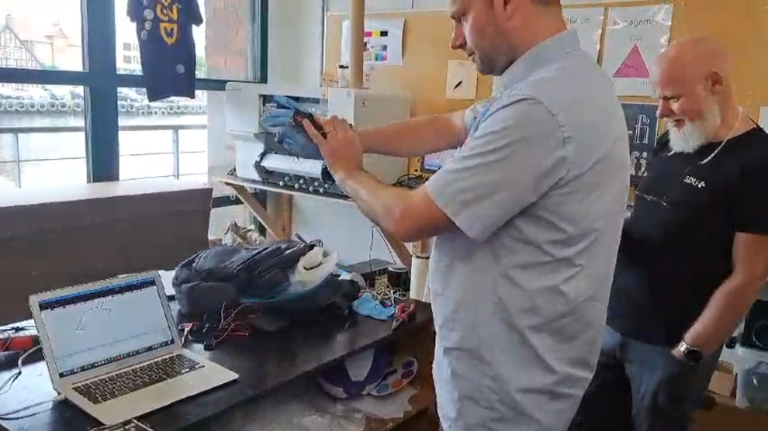
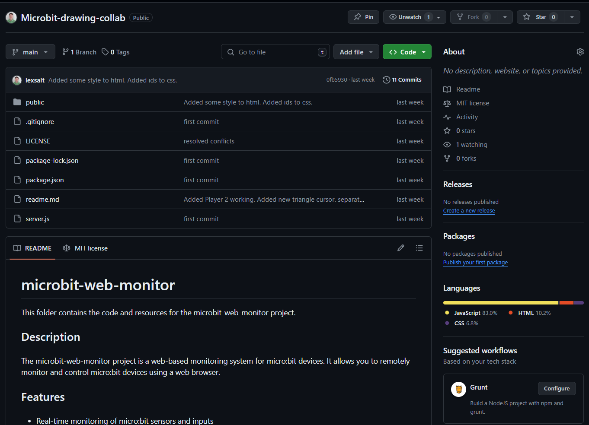
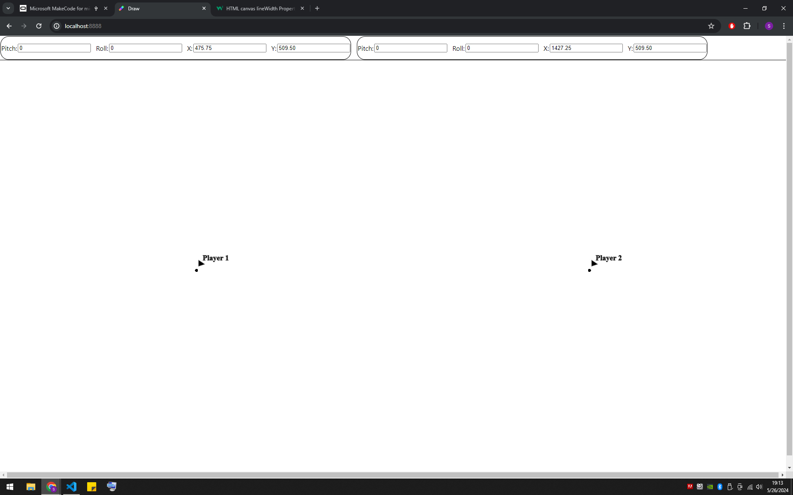
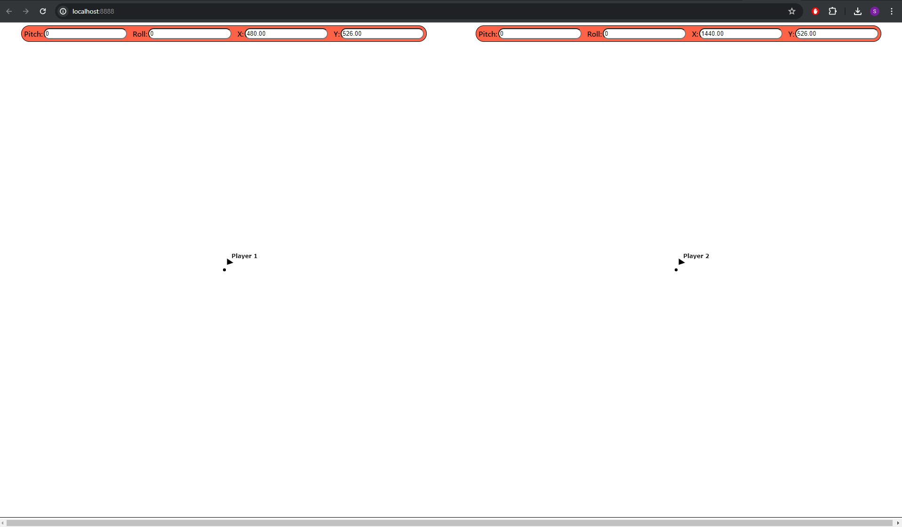
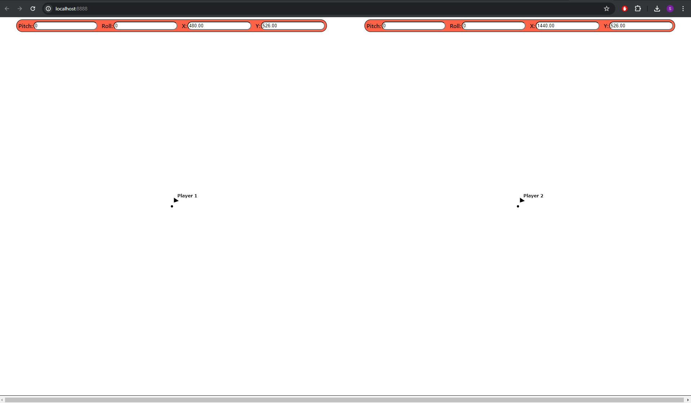

Digital Humanities Blog
Use Digital tools to solve Humanities problems.
Theme: to be determined
For the final project we have to use digital tools to solve one humanities problem. 
How It Works
Synchronized Collaborative Interaction:
Two children must work together to manipulate the giant pencil. One
child controls the button that activates drawing on the screen,
while both children need to coordinate their movements to achieve
the desired drawing. Real-time Tracking:
The pencil is equipped with a micro-bit board with sensors that
track its pitch and roll positions. This data is sent to another
micro-bit acting as a receiver, which then transmits the information
to a Node.js server via a serial port. Data Transmission and
Visualization:
The Node.js server processes the signals and redirects them via
socket to a web browser where a canvas visualizes the movements. The
pitch and roll of the pencil are converted into y-axis and x-axis
positions on the canvas, respectively.
Educational Objectives
Our prototype aims to teach children about the importance of synchronized movement and interpersonal motor coordination through play. Here are some key educational benefits:
- Understanding Synchrony: The children learn how their coordinated efforts impact the drawing on the screen. They must communicate and adjust their movements in real-time, fostering an understanding of how synchronization and teamwork are crucial in achieving a common goal.
- Proprioception and Balance: As they manipulate the pencil, children gain a better sense of their own body movements and spatial awareness. This hands-on experience enhances their proprioception and balance.
- Interactive Learning: The immediate visual feedback on the canvas ensures that children can quickly see the results of their actions. This instant response encourages them to experiment and adjust their movements, making the learning process dynamic and engaging.
Installation
On the computer:
Clone
this
repository to your local machine.
Install the required dependencies by running npm install.
Configure port following the instructions on index.js.
Start the server by running npm start.
Microbit Setup
We need 2 microbits:
- Transmitter that sends the pitch and roll signals
- Receiver that redirects the signal via Usb to the computer
Usage
Open your web browser and navigate to the URL where the server is
running.
Follow the on-screen instructions to connect and monitor your
micro:bit devices.
Class One
Digital Humanities. (Tuesday September 3) - U70 Classroom.
Why I chose this course. who am I?
Prototype 0
Design & Development update
Incorporating the positive feedback from the professor, we enhanced the project by focusing on the embodied collaborative experience of nine-year-old users. We introduced a giant pencil with two buttons, one at each end, connected to a micro . This setup encourages children to work together, using the buttons to interact with the device. By integrating this tactile, cooperative element, we aim to foster teamwork and active participation, making the learning process more engaging and interactive. The pencil serves as a familiar and fun tool, transforming the educational experience into a collaborative adventure.
Prototype 2
 

Synchrony
Synchrony Theme
After careful consideration, we chose the theme of Synchrony,
including synchronized movement, interpersonal motor coordination,
mimesis, and limbic resonance. The prototype new iteration is the
addition of a giant pencil that requires the collaboration of two
children to operate. This design is intended to promote full-body
collaborative interactions for a series of prototypes that provide
meaningful, real-time tracking and tangible interactions.
How It Works
Collaborative Interaction: Two children must work together to
manipulate the pencil. One child controls the button that activates
drawing on the screen, while both children need to coordinate their
movements to achieve the desired drawing.
Real-time Tracking
The pencil is equipped with a micro-bit board with sensors that
track its pitch and roll positions. This data is sent to another
micro-bit acting as a receiver, which then transmits the information
to a Node.js server via a serial port. The Node.js server processes
the signals and redirects them via socket to a web browser where a
canvas visualizes the movements.
The pitch and roll of the pencil are converted into y-axis and
x-axis positions on the canvas, respectively. Educational Objectives
Our prototype aims to teach children about the importance of
synchronized movement and interpersonal motor coordination through
play.
Understanding Synchrony
The children learn how their coordinated efforts impact the drawing
on the screen. They must communicate and adjust their movements in
real-time, fostering an understanding of how synchronization and
teamwork are crucial in achieving a common goal.
As they manipulate the pencil, children gain a better sense of their
own body movements and spatial awareness. This hands-on experience
enhances their proprioception and balance, crucial components of
kinesthetic learning.
Interactive Learning:
The immediate visual feedback on the canvas ensures that children
can quickly see the results of their actions. This instant response
encourages them to experiment and adjust their movements, making the
learning process dynamic and engaging.
The prototype is suitable for use in school environments such as
classrooms, gyms, and playgrounds. The collaborative nature of the
tool encourages social interaction and teamwork, essential skills
for young learners. Teacher and Student Involvement: We have
incorporated feedback from teachers and engaged with children
throughout the development process to ensure the tool is both
educational and enjoyable.
Prototyping and Iteration:
the approach involved multiple iterations, allowing us to refine the
design based on user feedback and ensure it effectively meets the
learning objectives. In conclusion, the prototype is not just a tool
for drawing; it is a medium through which children can learn about
synchrony, motor coordination, and teamwork. By providing a
tangible, interactive, and fun experience, we hope to make learning
about the human body and its movements an enjoyable and memorable
experience for young students.
Prototype 3.0


Design Log Final Iteration
Prototype 4.0 Synchrony theme
IMPORTANT
If you have the makecode.microbit.org/#editor page open it makes noise to the connection and you have bad line readings. Close all your editors before runnig the node js server.
Installation
Only one Micro-bit set up for testing:
serial.redirectToUSB()
serial.setBaudRate(BaudRate.BaudRate115200)
basic.forever(function () {
serial.writeLine("p" + input.rotation(Rotation.Pitch))
basic.pause(100)
serial.writeLine("r" + input.rotation(Rotation.Roll))
basic.pause(100)
if (pins.digitalReadPin(DigitalPin.P0) == 1) {
serial.writeLine("a" + "0")
}
}
)
On the microbit receiver:
radio.onReceivedValue(function (name, value) {
serial.writeLine("" + name + value)
})
radio.setGroup(99) serial.redirectToUSB()
On the microbit Emitter 1:
input.onButtonPressed(Button.A, function () {
radio.sendValue("a", 0)
})
radio.setGroup(99)
serial.redirectToUSB()
pins.setPull(DigitalPin.P0, PinPullMode.PullDown)
basic.forever(function () {
radio.sendValue("p", input.rotation(Rotation.Pitch))
basic.pause(100)
radio.sendValue("r", input.rotation(Rotation.Roll))
basic.pause(100)
if (pins.digitalReadPin(DigitalPin.P0) == 1) {
radio.sendValue("a", 0)
}
basic.pause(100)
})
Changes on input Metaphore
After consultation with the professor we agreed that the giant pencil characteristics of product metaphore is not adecuate for an input to this project. A pencil is typically associated with drawing or writing directly on a surface in close proximity. This physical interaction does not align well with the idea of remotely controlling a screen.
A more contextually relevant metaphor will better represent the remote interaction with the screen, making the user experience more intuitive, therefore I have decided to try different metaphores to see which one is the best fit for the project:
- 1- Giant Wheel: (similar to etch a sketch but all in one wheel)
- 2- Laser Pointer.
- 3- Bazooka style pointer.
- 4- Virtual Stylus.
- 5- Magic Wand.